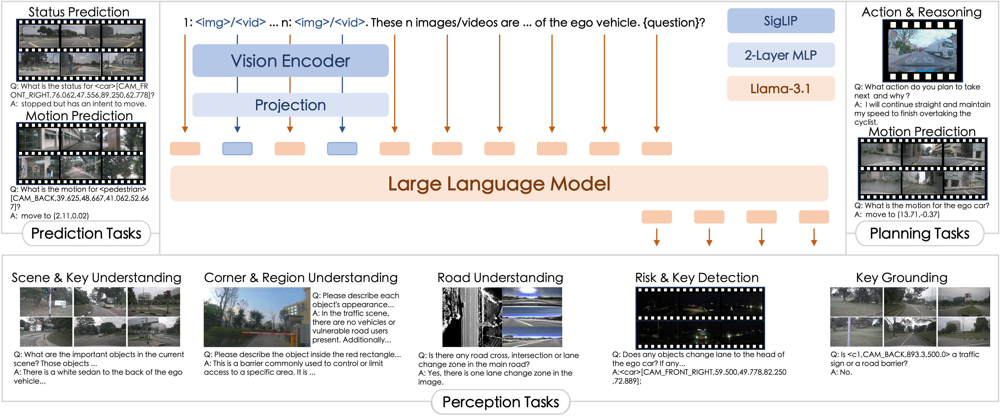
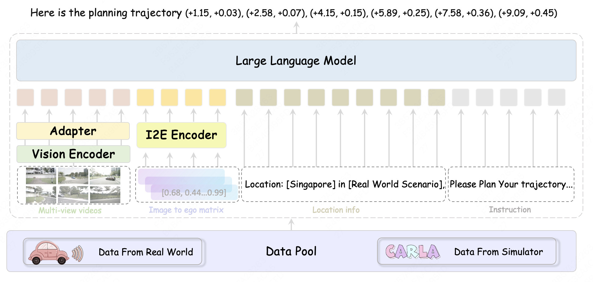
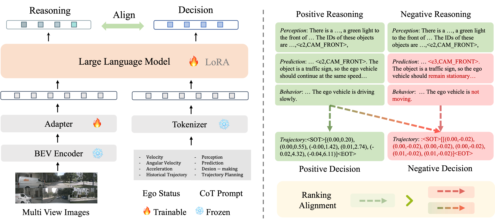
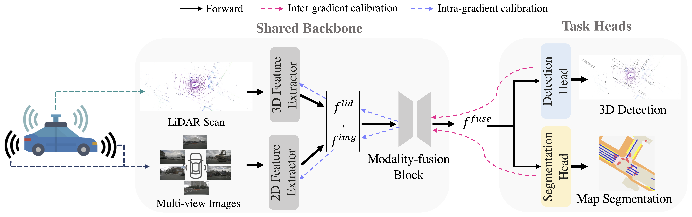
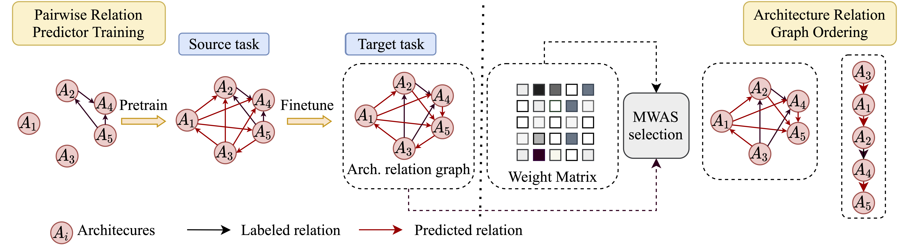

Zhijian Huang (黄志坚)
I am currently a researcher at Xiaomi. I received my M.Sc. from the
HCP-Lab
at Sun Yat-sen University, advised by Prof.
Xiaodan Liang,
and obtained my B.Eng. degree from Sun Yat-sen University as well.
My research interests center on Large Multimodal Models and their downstream applications, including VLA and World Models, with a focus on Autonomous Driving and Embodied Intelligence. I am always open to discussions and collaborations — feel free to reach out via email or WeChat.

Publications

We present OneVL (One-step latent reasoning and planning with Vision-Language explanations), a unified VLA and World Model framework that routes reasoning through compact latent tokens supervised by dual auxiliary decoders.

We open-source MiMo-Embodied, the first cross-embodied foundation model to successfully integrate and achieve state-of-the-art performance in both Autonomous Driving and Embodied AI.

We propose a novel architecture, VGGDrive, which empowers Vision-language models with cross-view Geometric Grounding for autonomous Driving.

We present X-SAM, a streamlined Multimodal Large Language Model framework that extends the segmentation paradigm from Segment Anything to Any Segmentation.

A novel all-in-one large multimodal model robustly equipped with general capabilities and strong generalization for autonomous driving tasks.

We propose RoboTron-Sim that improves real-world driving in critical situations by utilizing simulated hard cases.

We introduce RDA-Driver, a multimodal LLM decision-making model with reasoning-decision alignment for stronger autonomous driving planning.

We introduce FULLER, a novel yet simple multi-level gradient calibration learning framework across tasks and modalities during optimization.

We introduce Arch-Graph, a transferable NAS method that predicts task-specific optimal architectures with respect to given task embeddings.

We introduce DSBench, the first comprehensive Driving Safety Benchmark designed to assess a VLM's awareness of various safety risks in a unified manner.